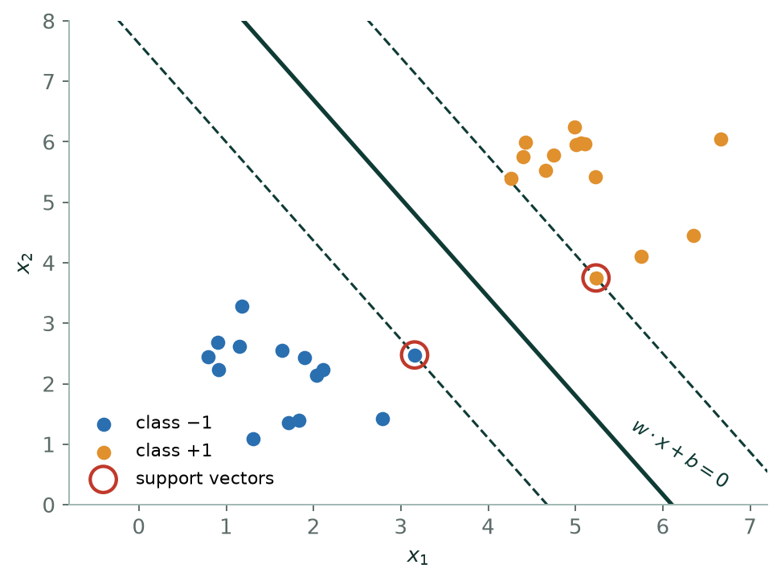
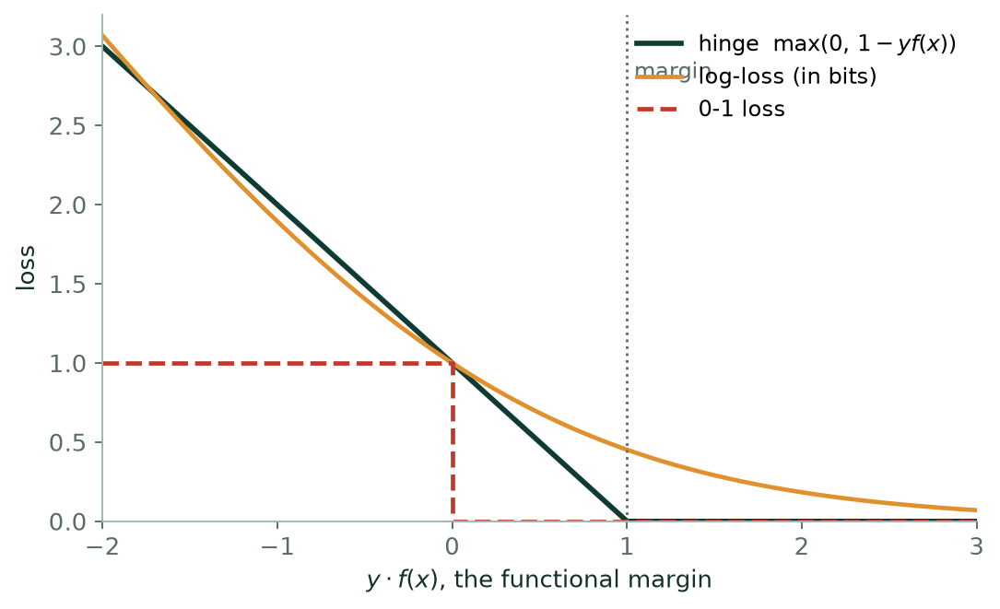
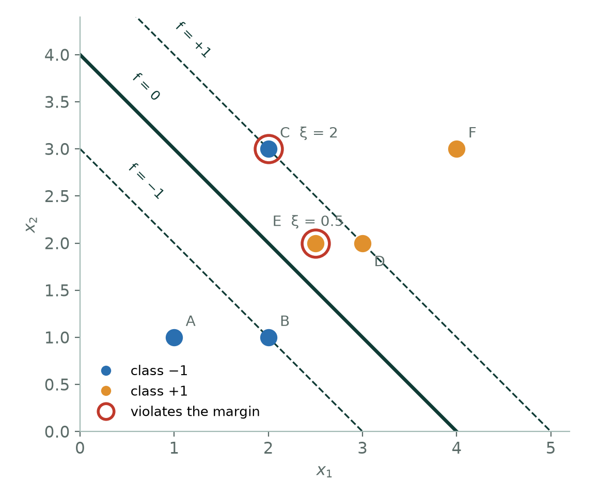
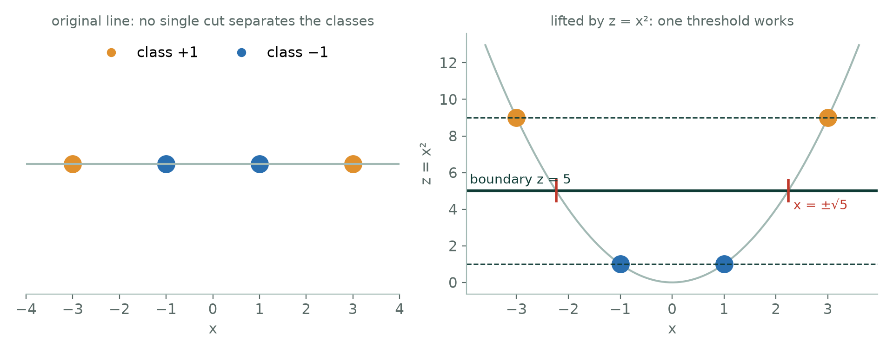

Chapter 11: Support Vector Machines¶
Many straight lines can separate two classes. The support vector machine asks for the best one: the line that leaves the widest empty corridor, or margin, on either side. This chapter derives the margin, introduces the soft margin that tolerates a few violations, and shows how a kernel lets the same machinery draw curved boundaries without ever computing the curved features.
11.1 Support Vector Machines¶
When the classes are separable, infinitely many lines separate them. The perceptron stops at whichever one it stumbles into first. The SVM asks a better question: which line leaves the widest empty corridor on both sides? A boundary that barely clears the nearest training points is one noisy measurement away from being wrong; a boundary with room around it is not.
Definition: The maximum-margin classifier
The margin hyperplanes are \(w^{T}x + b = \pm 1\), and the corridor between them has width \(2/\Vert w\Vert\). Maximising the margin is therefore the same as minimising \(\Vert w\Vert\):
minimise \(\tfrac{1}{2}\Vert w\Vert ^{2}\) subject to \(y_{i}(w^{T}x_{i} + b) \ge 1\) for every i
The support vectors are the examples for which the constraint is tight — the ones sitting exactly on the margin.
Real data overlaps, so the hard constraint is softened with slack variables and a cost \(C\) for violating it: minimise \(\tfrac{1}{2}\Vert w\Vert ^{2} + C \sum \xi _{i}\). Equivalently, minimise hinge loss \(\max(0, 1 -\) y·f(x)) plus an L2 penalty — which makes the SVM a close cousin of regularised logistic regression, differing only in the loss.


The kernel trick
Data that no line separates in two dimensions may be separated by a plane in three. Mapping \(x\) into a higher-dimensional space would normally be expensive — but the SVM's solution depends on the training points only through dot products, and a kernel function K(x, x′) computes the dot product in the higher space without ever constructing the coordinates. RBF: \(K = \exp(-\gamma \Vert x - x'\Vert ^{2})\), which corresponds to an infinite-dimensional space. Polynomial: \(K = (x^{T}x' + c)^{d}\). Two hyper-parameters then need tuning together: \(C\), which trades margin against violations, and \(\gamma\), which sets how far a single training example's influence reaches.
# SVM: two hyper-parameters that must be tuned together
from sklearn.svm import SVC
from sklearn.model_selection import GridSearchCV
grid = GridSearchCV(
make_pipeline(StandardScaler(), SVC(kernel="rbf")),
{"svc__C": [0.1, 1, 10, 100], "svc__gamma": [0.01, 0.1, 1]},
cv=5).fit(X_tr, y_tr)
print(grid.best_params_, grid.best_score_.round(3))
print("support vectors:", grid.best_estimator_[-1].n_support_, "of", len(y_tr))
Print that last line in every SVM practical. A handful of support vectors out of hundreds of training points is the sparsity the derivation predicted; a model where nearly every point is a support vector is telling you \(C\) is too large or the classes genuinely overlap.
Example 11.1: Deriving the margin width \(2/\Vert w\Vert\)
Problem. Why does maximising the margin amount to minimising \(\Vert w\Vert\) — and why is it legitimate to set the margin planes at \(w^{T}x + b = \pm 1\) rather than at some other pair of values?
Step 1 — the distance from a point to a hyperplane
Take any point \(x_{0}\) on the plane \(w^{T}x + b = 0\) and any point \(x\). Split \(x - x_{0}\) into a component along the unit normal \(w/\Vert w\Vert\) and one within the plane. Only the first contributes to the perpendicular distance, so
\(d = |w^{T}(x - x_{0})| / \Vert w\Vert = |w^{T}x +\) b| \(/ \Vert w\Vert\)
using \(w^{T}x_{0} =\) −b. So \(w\) is normal to the plane, and dividing by \(\Vert w\Vert\) is what turns the algebraic value into a real distance.
Step 2 — fix the scale
The pair (w, b) and (cw, cb) describe the same plane for any \(c > 0\), so \(\Vert w\Vert\) on its own means nothing until the scale is pinned down. We pin it by declaring that the closest points satisfy \(|w^{T}x +\) b| \(= 1\). That is a choice of units, not an assumption: given any separating plane, divide \(w\) and \(b\) by the smallest \(|w^{T}x_{i} +\) b| and the condition holds.
Step 3 — the width of the corridor
With that scaling the two margin planes are \(w^{T}x + b = +1\) and \(w^{T}x + b = -1\). By step 1 each lies at distance \(1/\Vert w\Vert\) from the boundary, so the corridor between them has width
\(2/\Vert w\Vert\)
Step 4 — turn it into a minimisation
Maximising \(2/\Vert w\Vert\) is minimising \(\Vert w\Vert\), and minimising \(\Vert w\Vert\) is minimising \(\tfrac{1}{2}\Vert w\Vert ^{2}\), which is smooth and convex where \(\Vert w\Vert\) is neither. The constraint that every point sits outside the corridor on its own side is \(y_{i}(w^{T}x_{i} + b) \ge 1\), the label \(y = \pm 1\) absorbing the side.
minimise \(\tfrac{1}{2}\Vert w\Vert ^{2}\) subject to \(y_{i}(w^{T}x_{i} + b) \ge 1\)
Answer. margin \(= 2/\Vert w\Vert\), so max-margin \(\Leftrightarrow\) minimise \(\tfrac{1}{2}\Vert w\Vert ^{2}\) subject to \(y_{i}(w^{T}x_{i} + b) \ge 1\)
Comment. This is a convex quadratic problem with linear constraints, so it has one optimum and no local traps. Its solution depends only on the constraints that are tight — the points sitting exactly on the corridor edge — which is where the name support vector comes from, and why deleting every other training point changes nothing.
11.2 Further topics¶
Slack variables and the soft margin¶
The hard-margin problem has no solution when the classes overlap, and it is brittle when they nearly do: one mislabelled point can drag the whole boundary towards it. The soft-margin SVM lets each point \(i\) fall short of the margin by an amount \(\xi_i \ge 0\), called its slack, and charges for it:
The slack of a point is read directly from its functional margin \(y_i f(x_i)\), and equals \(\max(0,\ 1 - y_i f(x_i))\), the hinge loss:
| Functional margin \(y\,f(x)\) | Slack \(\xi\) | Meaning |
|---|---|---|
| \(\ge 1\) | 0 | outside or exactly on the margin: no cost |
| between 0 and 1 | between 0 and 1 | correct side, but inside the corridor |
| \(< 0\) | \(> 1\) | wrong side: misclassified |
So the soft-margin SVM is equivalent to minimising the total hinge loss plus an L2 penalty on \(w\), which is the sense in which it is a close cousin of ridge-regularised logistic regression. Because the penalty is \(C\) times the loss rather than \(\lambda\) times the weights, \(C\) plays the role of \(1/\lambda\): a large \(C\) weighs the data heavily (narrow margin, few violations, low bias and high variance), and a small \(C\) weighs the margin heavily (wide margin, many violations tolerated, high bias and low variance). In the soft-margin machine the support vectors are all the points with \(\xi_i > 0\) or with \(y_i f(x_i) = 1\), so lowering \(C\) typically increases their number.
The dual form: why only dot products matter¶
The kernel trick rests on a rewriting of the problem. Introducing a multiplier \(\alpha_i \ge 0\) for each constraint and eliminating \(w\) and \(b\) gives the equivalent dual problem:
and the weight vector is recovered as \(w = \sum_i \alpha_i y_i x_i\). Three facts follow. First, \(\alpha_i > 0\) only for the support vectors; every other point has \(\alpha_i = 0\) and drops out of the sum, which is the algebraic form of "only the support vectors matter". Second, the training data enter the dual only through the dot products \(x_i\cdot x_j\). Third, a new point is classified by
again through dot products with the support vectors alone. Replacing every dot product \(x_i\cdot x_j\) by a kernel \(K(x_i, x_j)\) turns this, unchanged in any other respect, into a classifier in the feature space of the kernel: \(f(x) = \sum \alpha_i y_i K(x_i, x) + b\). That is the whole trick.
Choosing a kernel¶
| Kernel | Formula | Boundary | Hyper-parameters |
|---|---|---|---|
| Linear | \(x\cdot x'\) | a hyperplane | \(C\) |
| Polynomial | \((x\cdot x' + c)^{d}\) | curved, up to degree \(d\) | \(C\), \(d\), \(c\) |
| RBF (Gaussian) | \(\exp(-\gamma\Vert x - x'\Vert^{2})\) | flexible, local | \(C\), \(\gamma\) |
The polynomial kernel of degree 2 in two dimensions corresponds to six features, as the worked example showed; in \(n\) dimensions the number of features grows rapidly with \(d\), yet the kernel costs one dot product and a power. The RBF kernel equals 1 for identical points and falls towards 0 with distance, so it is a similarity measure, and the width \(1/\sqrt{\gamma}\) is the distance over which similarity fades. Its feature space has infinitely many dimensions, but the classifier stays finite and simple to evaluate because it is a weighted sum over the support vectors only. Since both non-linear kernels depend on distances or on dot products, features must be scaled first, exactly as for \(k\)-NN. A sensible order of attack is to try the linear kernel first, and move to RBF only if the linear boundary is clearly too simple, tuning \(C\) and \(\gamma\) together on a logarithmic grid with cross-validation.
11.3 Worked examples¶
The examples below work through the calculations of this chapter in full. Try each one on paper before reading the steps.
Example 11.2: The maximum-margin line through two points
Problem. A training set has just two points: \(x_+ = (4, 4)\) with class \(+1\) and \(x_- = (2, 2)\) with class \(-1\). Find \(w\), \(b\), the boundary and the margin width of the maximum-margin classifier.
Step 1 — reason geometrically first
With two points the widest corridor lies exactly halfway between them and is perpendicular to the segment joining them. So the boundary is the perpendicular bisector of the segment from \((2, 2)\) to \((4, 4)\), and both points are support vectors.
Step 2 — direction of \(w\), then \(b\)
\(w\) is normal to the boundary, so it points along \(x_+ - x_- = (2, 2)\); take \(w = (1, 1)\) for now. The midpoint is \(M = (3, 3)\) and it must lie on the boundary: \(1(3) + 1(3) + b = 0\), so \(b = -6\). A valid boundary is \(x_1 + x_2 - 6 = 0\).
Step 3 — rescale so the support vectors sit at \(\pm 1\)
The convention is \(y\,f(x) = 1\) at a support vector. Here \(f(x_+) = 4 + 4 - 6 = +2\) and \(f(x_-) = 2 + 2 - 6 = -2\), so \(y\,f = 2\) at both, twice too large. Divide \(w\) and \(b\) by 2: \(w = (0.5, 0.5)\), \(b = -3\).
Check: \(y_+ f(x_+) = 0.5(4) + 0.5(4) - 3 = 1\) and \(y_- f(x_-) = -(0.5(2) + 0.5(2) - 3) = 1\).
Step 4 — the margin
\(\Vert w\Vert = \sqrt{0.5^2 + 0.5^2} = \sqrt{0.5} = 0.7071\), so the margin is \(2/0.7071 = 2.828\).
As an independent check, both points lie on opposite edges of the corridor, so its width must equal the distance between them: \(\sqrt{(4-2)^2 + (4-2)^2} = \sqrt{8} = 2.828\).
Answer. \(w = (0.5, 0.5)\), \(b = -3\); boundary \(x_1 + x_2 = 6\); margin \(2\sqrt{2} = 2.828\); both points are support vectors.
Comment. Training an SVM is a search for the smallest \(\Vert w\Vert\) that keeps every point outside the corridor. With two points symmetry does the whole job; with hundreds a computer does it numerically, but the answer still depends only on the few points on the corridor edges.
Example 11.3: Eight points: support vectors, \(w\), \(b\) and the multipliers
Problem. Positive class (\(y = +1\)): \((4, 1), (4, -1), (7, 1), (7, -1)\). Negative class (\(y = -1\)): \((2, 0), (1, 1), (1, -1), (0, 0)\). (a) Identify the support vectors. (b) Find \(w\), \(b\) and the boundary. (c) Find the margin. (d) Find the multipliers \(\alpha_i\) with \(w = \sum_i \alpha_i y_i x_i\) and \(\sum_i \alpha_i y_i = 0\). (e) Check every constraint and classify \((5, 2)\) and \((2.5, 3)\).
Step 1 — the support vectors (part a)
The data are symmetric under \(x_2 \to -x_2\) and the maximum-margin solution is unique, so \(w_2 = 0\) and only \(x_1\) matters. The negatives have \(x_1 \in \{2, 1, 1, 0\}\) and the positives \(x_1 \in \{4, 4, 7, 7\}\), so the gap is narrowest between the negative point at \(x_1 = 2\) and the positives at \(x_1 = 4\). The support vectors are \((2, 0)\), \((4, 1)\) and \((4, -1)\).
Step 2 — solve the margin equations (part b)
Each support vector satisfies \(y(w_1x_1 + w_2x_2 + b) = 1\):
\((2, 0)\): \(-(2w_1 + b) = 1\), so \(2w_1 + b = -1\)
\((4, 1)\): \(4w_1 + w_2 + b = 1\)
\((4, -1)\): \(4w_1 - w_2 + b = 1\)
Subtracting the last two gives \(2w_2 = 0\), so \(w_2 = 0\). Subtracting the first from the second gives \(2w_1 = 2\), so \(w_1 = 1\), and then \(b = -1 - 2 = -3\).
The boundary is \(x_1 - 3 = 0\), that is \(x_1 = 3\), with margin lines \(x_1 = 2\) and \(x_1 = 4\).
Step 3 — the margin (part c)
\(\Vert w\Vert = 1\), so the margin is \(2/1 = 2\), the distance between the lines \(x_1 = 2\) and \(x_1 = 4\).
Step 4 — the multipliers (part d)
Write \(\alpha_1\) for \((2, 0)\) with \(y = -1\), and \(\alpha_2, \alpha_3\) for \((4, 1)\), \((4, -1)\) with \(y = +1\). Every other point has \(\alpha = 0\).
\(w = -\alpha_1(2, 0) + \alpha_2(4, 1) + \alpha_3(4, -1) = (1, 0)\)
The \(x_2\) component gives \(\alpha_2 - \alpha_3 = 0\), so \(\alpha_2 = \alpha_3\). The condition \(\sum \alpha_i y_i = 0\) gives \(-\alpha_1 + \alpha_2 + \alpha_3 = 0\), so \(\alpha_1 = 2\alpha_2\). The \(x_1\) component gives \(-2\alpha_1 + 4\alpha_2 + 4\alpha_3 = 1\), that is \(-4\alpha_2 + 8\alpha_2 = 1\), so \(\alpha_2 = 0.25\).
Hence \(\alpha = (0.5,\ 0.25,\ 0.25)\), all positive. As a check, \(\Vert w\Vert^2 = 1 = \sum\alpha_i = 0.5 + 0.25 + 0.25\).
Step 5 — verify every point and classify (part e)
With \(f(x) = x_1 - 3\):
| Point | \(y\) | \(f(x)\) | \(y\,f(x)\) | Status |
|---|---|---|---|---|
| \((4, 1)\), \((4, -1)\) | \(+1\) | \(1\) | \(1\) | on the margin |
| \((7, 1)\), \((7, -1)\) | \(+1\) | \(4\) | \(4\) | outside |
| \((2, 0)\) | \(-1\) | \(-1\) | \(1\) | on the margin |
| \((1, 1)\), \((1, -1)\) | \(-1\) | \(-2\) | \(2\) | outside |
| \((0, 0)\) | \(-1\) | \(-3\) | \(3\) | outside |
Every \(y\,f(x) \ge 1\), so the constraints hold. For \((5, 2)\): \(f = 5 - 3 = 2 > 0\), class \(+1\). For \((2.5, 3)\): \(f = 2.5 - 3 = -0.5 < 0\), class \(-1\), though it lies inside the margin.
Answer. Support vectors \((2, 0)\), \((4, 1)\), \((4, -1)\); \(w = (1, 0)\), \(b = -3\); boundary \(x_1 = 3\); margin \(2\); \(\alpha = (0.5, 0.25, 0.25)\); \((5, 2) \to +1\) and \((2.5, 3) \to -1\).
Comment. Five of the eight points have \(\alpha = 0\): delete them and the answer does not change. The multipliers are the SVM's own record of which points matter, and the prediction for a new point can be written \(f(x) = \sum_i \alpha_i y_i\,(x_i \cdot x) + b\), using the training points only through dot products, which is the opening for the kernel trick.
Example 11.4: Slack variables, the soft-margin objective and the role of \(C\)
Problem. A soft-margin linear SVM trained on the six points below gave \(f(x) = x_1 + x_2 - 4\), so \(w = (1, 1)\) and \(b = -4\).
| Point | \(x_1\) | \(x_2\) | \(y\) |
|---|---|---|---|
| A | 1 | 1 | \(-1\) |
| B | 2 | 1 | \(-1\) |
| C | 2 | 3 | \(-1\) |
| D | 3 | 2 | \(+1\) |
| E | 2.5 | 2 | \(+1\) |
| F | 4 | 3 | \(+1\) |
(a) For each point compute \(y\,f(x)\) and the slack \(\xi = \max(0, 1 - y\,f(x))\), and classify the point as outside, on or inside the margin, or misclassified. (b) Find the margin width and the objective \(\tfrac{1}{2}\Vert w\Vert^2 + C\sum\xi_i\) for \(C = 1\) and \(C = 10\).
Step 1 — functional margins and slacks (part a)
| Point | \(f(x)\) | \(y\,f(x)\) | \(\xi\) | Status |
|---|---|---|---|---|
| A | \(1 + 1 - 4 = -2\) | \(2\) | 0 | outside the margin, correct |
| B | \(2 + 1 - 4 = -1\) | \(1\) | 0 | on the margin |
| C | \(2 + 3 - 4 = 1\) | \(-1\) | \(2\) | misclassified |
| D | \(3 + 2 - 4 = 1\) | \(1\) | 0 | on the margin |
| E | \(2.5 + 2 - 4 = 0.5\) | \(0.5\) | \(0.5\) | inside the margin, correct |
| F | \(4 + 3 - 4 = 3\) | \(3\) | 0 | outside the margin, correct |
The reading of \(\xi\): \(\xi = 0\) means \(y\,f \ge 1\), outside or on the margin; \(0 < \xi \le 1\) means \(0 \le y\,f < 1\), on the correct side but inside the corridor; \(\xi > 1\) means \(y\,f < 0\), the wrong side. Slack is exactly the hinge loss.

Step 2 — total slack
\(\sum\xi_i = 0 + 0 + 2 + 0 + 0.5 + 0 = 2.5\).
Step 3 — margin and objective (part b)
\(\Vert w\Vert = \sqrt{1 + 1} = 1.4142\), so the margin is \(2/\Vert w\Vert = \sqrt{2} = 1.4142\), and \(\tfrac{1}{2}\Vert w\Vert^2 = 1\).
\(C = 1\): objective \(= 1 + 1(2.5) = 3.5\)
\(C = 10\): objective \(= 1 + 10(2.5) = 26\)
Answer. Slacks \(0, 0, 2, 0, 0.5, 0\) with total \(2.5\); C is misclassified, E is inside the margin, B and D lie on it; margin \(\sqrt{2}\); objective \(3.5\) at \(C = 1\) and \(26\) at \(C = 10\).
Comment. \(C\) sets the exchange rate between a wide corridor and few violations. At \(C = 1\) the violations cost about as much as the margin term, so the optimiser may keep a wide margin and tolerate the misclassified point. At \(C = 10\) the slack term dominates (25 of the 26), so the optimiser would tilt and narrow the corridor to rescue points C and E. Small \(C\) means a wide, forgiving margin that may under-fit; large \(C\) means a narrow margin that chases every point and may over-fit; \(C \to \infty\) recovers the hard-margin machine, which cannot be solved at all when the data overlap.
Example 11.5: The kernel trick on data no threshold can split
Problem. Four points lie on a number line: \(x = -3, -1, +1, +3\) with classes \(+1, -1, -1, +1\). (a) Show that no single threshold separates them. (b) Map them by \(z = \phi(x) = x^2\) and find the maximum-margin boundary in \(z\). (c) Classify \(x = 2.5\). (d) Express the boundary in the original \(x\).
Step 1 — why a line fails (part a)
On a line a linear classifier is a threshold \(t\): one class on the left, the other on the right. The pattern reads \(+, -, -, +\) from left to right, with the positives at both ends. Whatever \(t\) is chosen, some side has both classes.
Step 2 — lift the data (part b)
| Original \(x\) | \(-3\) | \(-1\) | \(+1\) | \(+3\) |
|---|---|---|---|---|
| \(z = x^2\) | 9 | 1 | 1 | 9 |
| Class | \(+1\) | \(-1\) | \(-1\) | \(+1\) |
In \(z\) the negatives both sit at \(z = 1\) and the positives both at \(z = 9\), so one threshold works. The support vectors are the closest opposing points, \(z = 1\) (class \(-1\)) and \(z = 9\) (class \(+1\)).
Step 3 — solve for \(w\) and \(b\)
With \(f(z) = wz + b\) and \(y\,f = 1\) at each support vector:
\(z = 1\), \(y = -1\): \(-(w + b) = 1\), so \(w + b = -1\)
\(z = 9\), \(y = +1\): \(9w + b = +1\)
Subtracting: \(8w = 2\), so \(w = 0.25\), and then \(b = -1 - 0.25 = -1.25\).
Check: \(f(1) = 0.25 - 1.25 = -1\) and \(f(9) = 2.25 - 1.25 = +1\). The boundary \(f(z) = 0\) is \(z = 1.25/0.25 = 5\), and the margin is \(2/0.25 = 8\), the gap between \(z = 1\) and \(z = 9\).
Step 4 — classify \(x = 2.5\) (part c)
\(z = 2.5^2 = 6.25\) and \(f(6.25) = 0.25(6.25) - 1.25 = 0.3125 > 0\), so class \(+1\).
Step 5 — back to the original space (part d)
The boundary \(z = 5\) means \(x^2 = 5\), so \(x = \pm\sqrt{5} = \pm 2.236\). The rule is: predict \(+1\) if \(|x| > 2.236\) and \(-1\) if \(|x| < 2.236\).

Answer. No threshold works on the line; after \(z = x^2\), \(w = 0.25\), \(b = -1.25\), boundary \(z = 5\), margin 8; \(x = 2.5 \mapsto z = 6.25\), \(f = +0.3125\), class \(+1\); in \(x\) the boundary is \(|x| = \sqrt{5}\).
Comment. One straight cut in the lifted space became two cut points on the line, so the rule is curved in the original space although the mathematics stayed linear throughout. A real SVM never builds \(\phi(x)\), which may have thousands of dimensions or infinitely many; it uses a kernel \(K(a, b) = \phi(a)\cdot\phi(b)\) computed from the original coordinates.
Example 11.6: Kernel matrices, and checking the trick against the explicit map
Problem. Three points: \(a = (1, 1)\), \(b = (2, 0)\), \(c = (0, 2)\). (a) Build the \(3 \times 3\) matrix of the polynomial kernel \(K(u, v) = (u \cdot v + 1)^2\). (b) Verify the entry \(K(b, c)\) by mapping into the feature space explicitly. (c) Build the RBF kernel matrix \(K(u, v) = e^{-\gamma\Vert u - v\Vert^2}\) with \(\gamma = 0.5\).
Step 1 — dot products and the polynomial matrix (part a)
| Pair | \(u \cdot v\) | \(K = (u\cdot v + 1)^2\) |
|---|---|---|
| \(a, a\) | \(1 + 1 = 2\) | \(3^2 = 9\) |
| \(a, b\) | \(2 + 0 = 2\) | \(9\) |
| \(a, c\) | \(0 + 2 = 2\) | \(9\) |
| \(b, b\) | \(4\) | \(5^2 = 25\) |
| \(b, c\) | \(0\) | \(1^2 = 1\) |
| \(c, c\) | \(4\) | \(25\) |
Step 2 — the hidden map (part b)
For this kernel in two dimensions, the map is \(\phi(x) = (1,\ \sqrt{2}x_1,\ \sqrt{2}x_2,\ x_1^2,\ x_2^2,\ \sqrt{2}x_1x_2)\): two dimensions have become six. Then
\(\phi(b) = \phi(2, 0) = (1,\ 2\sqrt{2},\ 0,\ 4,\ 0,\ 0)\) and \(\phi(c) = \phi(0, 2) = (1,\ 0,\ 2\sqrt{2},\ 0,\ 4,\ 0)\)
\(\phi(b)\cdot\phi(c) = 1\cdot 1 + 2\sqrt{2}\cdot 0 + 0\cdot 2\sqrt{2} + 4\cdot 0 + 0\cdot 4 + 0\cdot 0 = 1 = K(b, c)\) ✓
The long way took six multiplications in six dimensions; the short way, one dot product and one squaring in two.
Step 3 — the RBF matrix (part c)
This kernel needs squared distances: \(\Vert a - b\Vert^2 = 1 + 1 = 2\), \(\Vert a - c\Vert^2 = 1 + 1 = 2\), \(\Vert b - c\Vert^2 = 4 + 4 = 8\), and 0 from each point to itself. With \(\gamma = 0.5\):
\(K(a, b) = K(a, c) = e^{-1} = 0.3679\), \(\quad K(b, c) = e^{-4} = 0.0183\), \(\quad K(x, x) = e^{0} = 1\)
Answer. The polynomial matrix above, \(\phi(b)\cdot\phi(c) = 1 = K(b, c)\), and the RBF matrix above.
Comment. Every entry is a similarity score, and the matrix is the only thing an SVM ever sees of the data. The RBF matrix is the easier to read: 1 on the diagonal, 0.368 for the moderately close pairs \(a\)–\(b\) and \(a\)–\(c\), and 0.018 for \(b\) and \(c\), which are far apart. The parameter \(\gamma\) sets how fast similarity decays with distance: a large \(\gamma\) makes each point's influence very local, with a risk of over-fitting; a small \(\gamma\) makes the boundary smooth.
11.4 Common mistakes to avoid¶
Each of the following is a mistake that costs marks in an examination or accuracy in practice.
- Do not confuse the functional margin y·f(x) with the geometric margin \(y\cdot f(x)/\Vert w\Vert\). Only the second is real distance.
11.5 Summary¶
After working through this chapter you should be able to do the following.
- State the SVM objective, compute a margin as \(2/\Vert w\Vert\), identify support vectors from the functional margin, say what \(C\) trades off, and explain what the kernel trick computes without ever constructing the coordinates.
11.6 Exercises¶
-
An SVM has \(w = (3, 4), b = -10\). Give \(\Vert w\Vert\), the margin width and the geometric distance of (2, 2) from the boundary.
Answer
\(\Vert w\Vert = \sqrt{3^2 + 4^2} = 5\). The margin width is \(2/\Vert w\Vert = 0.4\). For \((2, 2)\): \(f = 3(2) + 4(2) - 10 = 4\), so the geometric distance is \(|f|/\Vert w\Vert = 4/5 = 0.8\). Since \(0.8\) is larger than the half-width \(0.2\), the point lies well outside the margin, on the positive side.
-
A trained linear SVM has \(w = (2, 3)\) and \(b = -6\). Classify \(A = (3, 3)\), \(B = (0, 1)\) and \(C = (1, 2)\), compute the distance of each from the boundary, and say which the model is least sure about.
Answer
\(f(A) = 6 + 9 - 6 = 9\), \(f(B) = 0 + 3 - 6 = -3\), \(f(C) = 2 + 6 - 6 = 2\), so the classes are \(+1, -1, +1\). \(\Vert w\Vert = \sqrt{13} = 3.606\), so the distances are \(9/3.606 = 2.50\), \(3/3.606 = 0.83\) and \(2/3.606 = 0.55\). The model is least sure about \(C\), which is closest to the boundary. Dividing by \(\Vert w\Vert\) matters: multiplying \(w\) and \(b\) by 10 describes the same line but multiplies every \(f\) by 10, whereas the distance is unchanged.
-
Six training points: \((1,1), (2,1), (1,2)\) with class \(-1\) and \((4,4), (5,4), (4,5)\) with class \(+1\). Find the maximum-margin line, the support vectors and the margin, and classify \((3, 3)\), saying how confident the model is.
Answer
By symmetry about the diagonal, \(f(x) = a(x_1 + x_2) + b\) and only \(s = x_1 + x_2\) matters. The negatives have \(s \in \{2, 3, 3\}\) and the positives \(s \in \{8, 9, 9\}\); the closest are \(s = 3\) and \(s = 8\). Support vectors satisfy \(y\,f = 1\): \(-(3a + b) = 1\) and \(8a + b = 1\), so \(5a = 2\), \(a = 0.4\) and \(b = -2.2\). Then \(w = (0.4, 0.4)\), the boundary is \(x_1 + x_2 = 5.5\), and the support vectors are \((2,1)\), \((1,2)\) and \((4,4)\) (each has \(y\,f = 1\); the others have \(1.4\)). \(\Vert w\Vert = \sqrt{0.32} = 0.5657\), so the margin is \(2/0.5657 = 3.536\) (check: a gap of 5 along \(x_1 + x_2\), divided by \(\sqrt{2}\), is \(3.536\)). For \((3, 3)\): \(f = 1.2 + 1.2 - 2.2 = +0.2\), so class \(+1\), but the distance is only \(0.2/0.5657 = 0.354\): it is deep inside the margin, so the prediction is low-confidence. Deleting \((1,1)\), \((5,4)\) and \((4,5)\) would leave the solution unchanged.
-
Positive points: \((4, 1), (4, -1), (8, 1), (8, -1)\). Negative points: \((1, 0), (0, 1), (0, -1), (-1, 0)\). Identify the support vectors, find the maximum-margin hyperplane and its margin, and write the Gaussian (RBF) kernel.
Answer
The data are symmetric under \(x_2 \to -x_2\), so \(w = (w_1, 0)\) and only \(x_1\) matters. The nearest opposing points are \((1, 0)\) among the negatives and \((4, 1), (4, -1)\) among the positives; these are the support vectors. Margin conditions: \(-(w_1 + b) = 1\) and \(4w_1 + b = 1\), so \(3w_1 = 2\), \(w_1 = 2/3\), \(b = -5/3\). The hyperplane is \(\tfrac{2}{3}x_1 - \tfrac{5}{3} = 0\), that is \(x_1 = 2.5\), with margin lines \(x_1 = 1\) and \(x_1 = 4\). The margin is \(2/\Vert w\Vert = 2/(2/3) = 3\), which is the distance from \(x_1 = 1\) to \(x_1 = 4\). The other points satisfy \(y\,f > 1\), for instance \((0, \pm 1)\) has \(y\,f = 5/3\) and \((8, \pm 1)\) has \(11/3\). The Gaussian kernel is \(K(x, x') = \exp(-\gamma\Vert x - x'\Vert^2)\).
-
A classifier \(f(x) = 0.4x_1 + 0.4x_2 - 2.2\) was fitted to the points \((1,1), (2,1), (1,2)\) with class \(-1\) and \((4,4), (5,4), (4,5)\) with class \(+1\). Two new points arrive: \(P_7 = (5, 1)\) with \(y = -1\) and \(P_8 = (3, 3)\) with \(y = +1\). Compute the slack of all eight points, classify \(P_7\) and \(P_8\), and evaluate \(\tfrac{1}{2}\Vert w\Vert^2 + C\sum\xi_i\) for \(C = 1\) and \(C = 10\).
Answer
The first six points have \(\xi = 0\) (their \(y\,f\) are \(1.4, 1.0, 1.0, 1.0, 1.4, 1.4\)). For \(P_7\): \(f = 2.0 + 0.4 - 2.2 = 0.2\) and \(y\,f = -0.2\), so \(\xi_7 = 1 - (-0.2) = 1.2 > 1\): misclassified. For \(P_8\): \(f = 0.2\), \(y\,f = 0.2\), \(\xi_8 = 0.8\): correct side but inside the margin. \(\sum\xi = 2.0\). The margin term is \(\tfrac{1}{2}(0.32) = 0.16\), so the objective is \(0.16 + 1(2.0) = 2.16\) for \(C = 1\) and \(0.16 + 10(2.0) = 20.16\) for \(C = 10\). Training accuracy is \(7/8 = 87.5\%\). Note that \(P_7\) and \(P_8\) have the same \(f\) and opposite labels, which is why one is a violation of the margin and the other is an outright error.
-
For \(x = (1, 2)\) and \(z = (2, 1)\) compute the linear kernel, the polynomial kernel \((x\cdot z + 1)^2\) and the RBF kernel with \(\gamma = 0.5\). Verify the polynomial value with the explicit map \(\phi(x) = (1, \sqrt{2}x_1, \sqrt{2}x_2, x_1^2, x_2^2, \sqrt{2}x_1x_2)\).
Answer
Linear: \(x\cdot z = 1(2) + 2(1) = 4\). Polynomial: \((4 + 1)^2 = 25\). RBF: \(\Vert x - z\Vert^2 = 1 + 1 = 2\), so \(e^{-0.5 \times 2} = e^{-1} = 0.3679\). Explicit map: \(\phi(x) = (1, 1.4142, 2.8284, 1, 4, 2.8284)\) and \(\phi(z) = (1, 2.8284, 1.4142, 4, 1, 2.8284)\), so \(\phi(x)\cdot\phi(z) = 1 + 4 + 4 + 4 + 4 + 8 = 25\), matching the kernel. The kernel delivered a six-dimensional inner product from one two-dimensional dot product.
-
Explain the roles of \(C\) and \(\gamma\) in an RBF-kernel SVM in terms of bias and variance. What happens as \(C \to \infty\), and as \(\gamma\) becomes very large?
Answer
\(C\) is the price of a margin violation. A large \(C\) forces few violations: a narrow margin, a boundary that depends on a few points, low bias and high variance (risk of over-fitting). A small \(C\) tolerates violations: a wide margin, many support vectors, higher bias and lower variance (risk of under-fitting). As \(C \to \infty\) the machine becomes the hard-margin SVM, which has no solution if the data overlap. \(\gamma\) controls how far one training point's influence reaches: a small \(\gamma\) gives a smooth, nearly linear boundary (high bias); a very large \(\gamma\) makes each point influence only its immediate neighbourhood, so the boundary wraps tightly round individual points and over-fits, in the extreme memorising the training set. The two are tuned together, usually by a grid search with cross-validation.
-
A linear SVM has \(w = (3, 4)\) and \(b = -10\), and the point \((6, 2)\) has label \(+1\). Compute its functional margin \(y\,f(x)\) and its geometric margin. Then replace \((w, b)\) by \((6, 8), -20\): what changes and what does not, and why is the scale fixed by "the support vectors have \(y\,f = 1\)"?
Answer
\(f(6, 2) = 18 + 8 - 10 = 16\), so the functional margin is \(16\) and the geometric margin is \(16/\Vert w\Vert = 16/5 = 3.2\). With \((6, 8), -20\) the line is the same, but \(f = 32\) (the functional margin doubles) while \(\Vert w\Vert = 10\) and the geometric margin is still \(32/10 = 3.2\). The functional margin can be inflated at will by rescaling, so it is meaningless alone; only the geometric margin is a real distance. Fixing the scale by \(y\,f = 1\) at the closest points removes this freedom and makes \(2/\Vert w\Vert\) the width of the corridor.
-
True or false, with a reason: (a) deleting a training point that is not a support vector changes the maximum-margin boundary; (b) deleting a support vector never changes it.
Answer
(a) False. The solution is determined entirely by the support vectors (the points with \(y\,f = 1\) and non-zero multiplier); every other point could be removed and the optimum would be the same. (b) False. Removing a support vector generally removes one of the constraints holding the margin in place, so the corridor can widen and the boundary move. (If several points sit on the same margin line, removing one of them may leave the solution unchanged, but in general it does not.)
-
Why does a wide margin tend to generalise better than a narrow one?
Answer
A boundary that is as far as possible from every training point is the most committed one: a small perturbation of a new point (measurement noise, or natural variation) is unlikely to push it across. A boundary that barely clears the nearest points is one noisy measurement away from an error. In bias-variance terms the large margin limits the flexibility of the classifier (it penalises \(\Vert w\Vert\)) and so lowers variance.
-
Compare the hinge loss \(\max(0, 1 - m)\) and the logistic loss \(\ln(1 + e^{-m})\) at the functional margins \(m = y\,f(x) = 2,\ 0.5,\ -1\). What does the comparison say about which training points influence each model?
Answer
Hinge: \(0,\ 0.5,\ 2\). Logistic: \(\ln(1 + e^{-2}) = 0.1269\), \(\ln(1 + e^{-0.5}) = 0.4741\), \(\ln(1 + e^{1}) = 1.3133\). (The logistic loss is the negative log of \(\sigma(m)\), the log-loss of the logistic regression chapter, written for labels \(\pm 1\).) The hinge loss is exactly zero for any point already correct by a margin of 1, so such points exert no pull and the solution depends only on points with \(m \le 1\): the support vectors, hence sparsity. The logistic loss is never exactly zero, so every point, however safe, still contributes a little to the gradient. The losses agree in being large and roughly linear for badly wrong points.
-
For the four points \(x = -3, -1, 1, 3\) with classes \(+1, -1, -1, +1\), the map \(z = x^2\) gives the rule \(f(z) = 0.25z - 1.25\). Classify \(x = -0.5\) and \(x = -2.5\), and say what the decision rule is in the original variable.
Answer
\(x = -0.5\): \(z = 0.25\), \(f = 0.0625 - 1.25 = -1.1875 < 0\), class \(-1\). \(x = -2.5\): \(z = 6.25\), \(f = 1.5625 - 1.25 = +0.3125 > 0\), class \(+1\). The boundary \(f = 0\) is \(z = 5\), so in \(x\) the rule is: predict \(+1\) when \(|x| > \sqrt{5} = 2.236\) and \(-1\) otherwise. A rule with two cut points on the line, obtained from one threshold in the lifted space.
-
Distinguish a hard-margin from a soft-margin SVM. State the constraint satisfied at a support vector in the hard-margin case, and explain the roles of \(C\) and the slack variables \(\xi_i\) in the soft-margin case.
Answer
The hard-margin SVM minimises \(\tfrac{1}{2}\Vert w\Vert^2\) subject to \(y_i(w^Tx_i + b) \ge 1\) for every point; it exists only for linearly separable data, and a single outlier can force a very narrow margin. A support vector is a point with \(y_i(w^Tx_i + b) = 1\) exactly. The soft-margin SVM relaxes the constraint to \(y_i(w^Tx_i + b) \ge 1 - \xi_i\) with \(\xi_i \ge 0\) and minimises \(\tfrac{1}{2}\Vert w\Vert^2 + C\sum\xi_i\). Each \(\xi_i\) measures how far point \(i\) falls short of the margin: \(0\) outside, between \(0\) and \(1\) inside the corridor on the correct side, above \(1\) misclassified. \(C\) is the price of slack: large \(C\) approaches the hard margin, small \(C\) allows many violations and a wider corridor.
-
When would you prefer a linear SVM to logistic regression, and when the reverse?
Answer
Both learn a linear boundary; they differ in the loss. Prefer logistic regression when you need probabilities directly (it models \(P(y = 1 \mid x)\) and its output is a usable probability), when coefficients must be reported as odds ratios, or when a fast, simple baseline is wanted. Prefer the SVM when the classes have a clear margin, when there are many features relative to examples (as in text), when a kernel is needed for a curved boundary, or when only a handful of support vectors should determine the model. An SVM's output is a signed score rather than a probability; turning it into one needs an extra calibration step. In practice the two often perform similarly on linear problems, and the choice is driven by what the user needs the output to be.